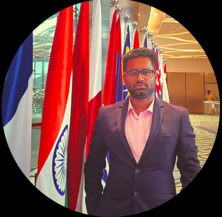
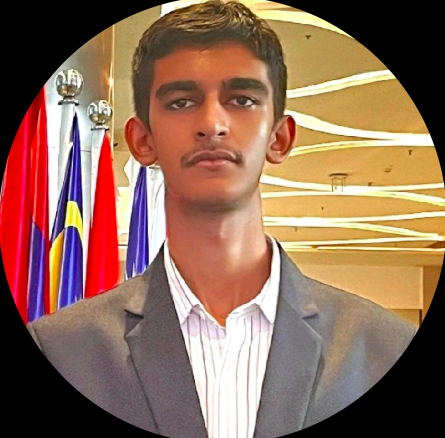
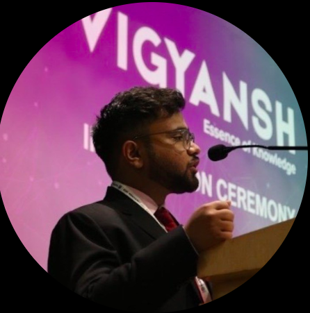
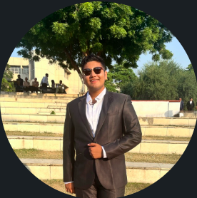
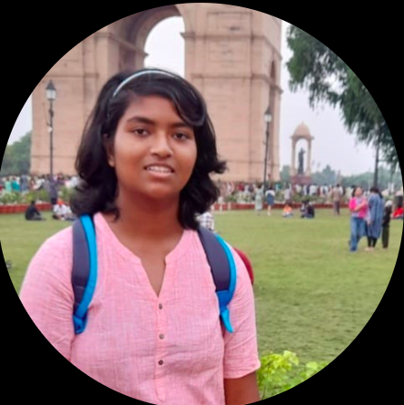
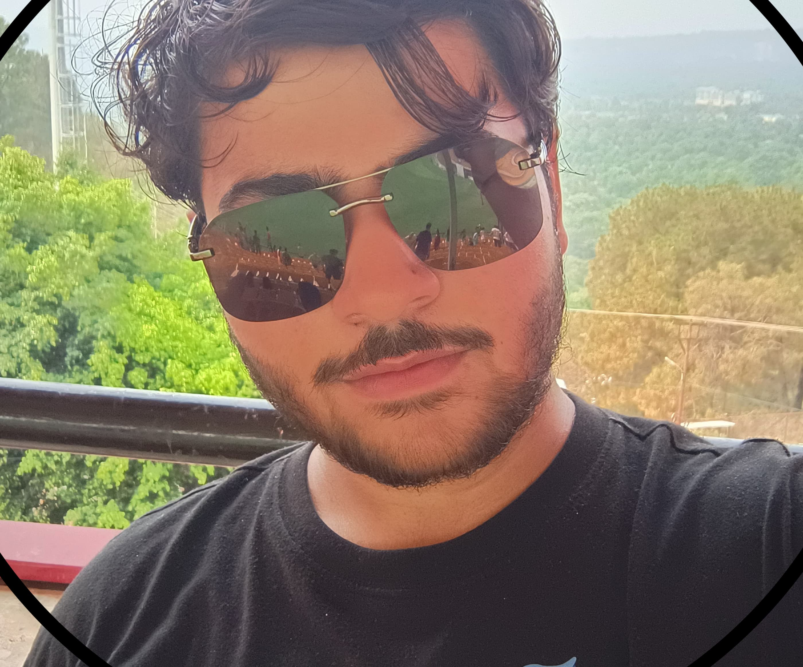
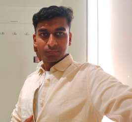
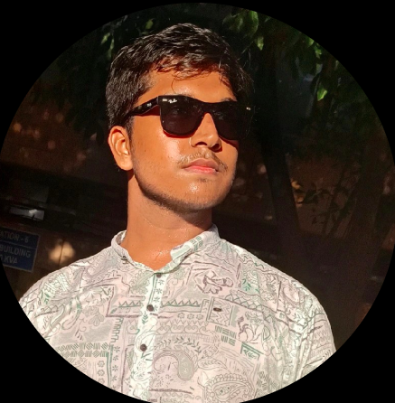
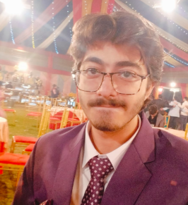

Advisory Council

Akhilesh Goel, the founding pillar of IPI DTU, served as the chapter’s first President, laying a strong foundation of professionalism, innovation, and industry-academia synergy. His visionary leadership not only established the chapter but also ensured its early recognition within the plastics industry network. Under his guidance, IPI DTU hosted its inaugural seminars, built strong student-industry ties, and ignited a lasting culture of excellence. Akhilesh's commitment to technical growth and student empowerment continues to inspire the chapter’s journey. He remains a guiding force, known for turning ideas into impactful initiatives and setting high standards for future leaders at DTU.
Arjun Dhama, a founding member and the former Vice President of IPI DTU, played a pivotal role in shaping the chapter’s core values and growth trajectory. A Chemical Engineering student from the Class of 2026, Arjun brought unmatched energy and strategic thinking to the team. Beyond IPI, he’s a dynamic force—Captain at DTU Rocketry, and a key member of Tatva DTU and DTU Supermileage. His multifaceted involvement reflects his passion for innovation and leadership. Arjun’s contributions laid the groundwork for many flagship initiatives, and his legacy continues to guide the chapter’s evolving vision and student-led excellence.

Rukminesh Tiwari, the former General Secretary of IPI DTU, is known for his precision, dedication, and unmatched work ethic. A final-year Chemical Engineering undergrad at DTU (DCE), he brought administrative finesse and visionary planning to the chapter’s operations. With internships at DRDO, CSIR, GAIL, and CSE under his belt, Rukminesh bridged academic excellence with real-world experience. As President of IIChE DTU and Treasurer of Tatva DTU, he’s led key student-driven initiatives around energy transitions and CCUS. A Smart India Hackathon 2024 finalist, Rukminesh’s leadership continues to leave a lasting impact on DTU’s technical and sustainability-driven ecosystem.

Pranav Gupta, a founding member and former Treasurer of IPI DTU, brought strategic vision and operational discipline to the chapter during its formative years. A Chemical Engineering undergrad at DTU (DCE), Pranav’s diverse experience across Technip Energies, IOCL, DRDO, FMS, and Agility Ventures reflects his deep-rooted passion for energy transitions and green hydrogen. As a UN Millennium Fellow and President of Tatva DTU, he has driven impactful initiatives across sustainability and innovation. Also a Smart India Hackathon National Finalist, Pranav’s leadership legacy at IPI DTU is defined by structure, foresight, and a strong push towards industry-academia synergy.
Senior Council
Aviral Chaturvedi, the current President of IPI DTU, is a dynamic sophomore pursuing Chemical Engineering at DTU. A founding member of the junior council, Aviral embodies curiosity, leadership, and a forward-thinking mindset. Passionate about sustainable energy and green innovations, he’s driven by the potential of combining core chemical engineering with emerging technologies like machine learning and data analysis. His vision for IPI DTU focuses on building a future-ready chapter that bridges academia, research, and industry. Outside the lab, Aviral is deeply interested in geopolitics, geoeconomics, and books—making him a rare blend of a techie, thinker, and changemaker.

Aaditya Vashisht, the current Vice President of IPI DTU and a founding member of the junior council, is the powerhouse that keeps the society running like a well-oiled reactor. A sophomore at DTU (formerly DCE) and an ex-intern at Indika AI, Aaditya blends technical brilliance with unmatched dedication. With deep passion for renewable energy, material science, and sustainability, he’s the go-to guy for everything from strategy to execution. Whether it’s research, outreach, or leadership—Aaditya does it all (and then some). Simply put, he’s the backbone of IPI DTU—the most driven, dependable, and hardest-working member on the team.

Anwesha Mandal is a sophomore pursuing Chemical Engineering at Delhi Technological University (formerly DCE), known for her scientific curiosity and sharp analytical mindset. A passionate learner, she thrives in collaborative environments and brings a strong blend of creativity, time management, teamwork, and leadership to every initiative she undertakes. With a solid foundation in science and mathematics, Anwesha is eager to apply her knowledge to real-world challenges and gain hands-on experience in the field. Her proactive attitude and commitment to growth make her a valuable asset to the IPI DTU team and a rising star in the making.

Ayush S Verma, the current Treasurer of IPI DTU, is a dedicated Chemical Engineering undergraduate at Delhi Technological University (formerly DCE). With a sharp eye for detail and a responsible approach to leadership, Ayush ensures smooth financial operations within the chapter. A proud Arwachin International School alum, he’s passionate about continuous learning and personal growth. Always seeking to level up, he actively explores new skills and opportunities. Beyond the balance sheets, Ayush is a talented singer and sports enthusiast, bringing creativity, discipline, and energy to every role he takes on—both within IPI and beyond.

Jayesh Kumar, the current Joint Treasurer of IPI DTU, is a dedicated and detail-oriented Chemical Engineering undergraduate at Delhi Technological University (formerly DCE). Known for his calm composure and methodical approach, Jayesh plays a key role in managing the chapter’s finances with accuracy and accountability. A team player through and through, he ensures that operations run smoothly behind the scenes while contributing actively to the society’s growth. With a strong academic foundation and a growing interest in industrial innovation, Jayesh is committed to learning, leading, and supporting initiatives that make a lasting impact within and beyond the IPI community.

Ankur Singh, the current Joint Secretary of IPI DTU, is a driven Chemical Engineering student at Delhi Technological University (formerly DCE), known for his proactive attitude and dependable nature. As a key member of the executive council, Ankur ensures seamless coordination of events, communications, and society operations. His organizational skills and attention to detail make him an essential pillar behind the smooth functioning of IPI DTU. Always eager to take initiative, Ankur balances academic rigor with a deep commitment to student-led growth and collaboration, embodying the spirit of responsibility, teamwork, and continuous improvement.

Neil Bhatia, the Team Coordinator of IPI DTU, is a passionate and purpose-driven Chemical Engineering student from the Class of 2027 at Delhi Technological University (formerly DCE). With a keen interest in renewable energy and sustainable manufacturing, Neil brings both vision and structure to the team’s functioning. He thrives on collaboration, ensuring that ideas turn into impactful actions. Always looking to bridge knowledge with practice, Neil is actively exploring internships, research, and industry partnerships. His commitment to innovation, environmental stewardship, and smooth team coordination makes him a vital part of IPI DTU’s present and an exciting force for its future.